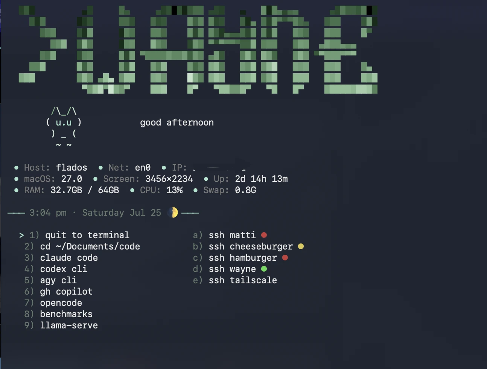

Apple Music Toolkit
born out of frustration with how messy a large iTunes library gets. i've had the same Apple Music library since roughly 2012 and it was a disaster: duplicate albums, compilations split across fifteen phantom artists, ghost tracks that showed up in the app but wouldn't play, missing metadata everywhere. so i built a toolkit to fix all of it.
it auto-merges album variations; fixes blown-out compilations; fills in blank album artist fields; force-refreshes ghost tracks from disk; and pulls genre and year data from XML exports. oh, and there's a MusicBrainz completeness checker and a Spotify migration tool if you need it. all of it runs through amt.sh, a shell script with subcommands for each task.
→ github.com/llostinthesauce/apple-music-toolkit
forge
a local-first AI inference showcase running on the M5 Pro. includes live LLM benchmarking with a leaderboard, adaptive model router, side-by-side model comparison, audio memo transcription + structured analysis, multi-turn chat with smart routing, live hardware telemetry, and an OpenAI-compatible API proxy. all runs locally via MLX and LM Studio. it exists mostly because i wanted one place to stress-test models and see what on-device inference can actually do in 2026.
parcel-os
a nationwide property intelligence platform that normalizes parcel data from 3,000+ inconsistent county assessor sites into a unified map UI. address search, property attributes, zoning, flood risk, sale history, and Gemini-powered natural language queries like "show me vacant lots over 1 acre under $80k." probably the most ambitious thing i have built that i never finished.
ml-lama
a local-first, Apple Silicon-optimized LLM platform — basically "Ollama for MLX." includes a Swift SDK, an HTTP daemon with an OpenAI-compatible API, a CLI, and a content-addressed model store for pulling, running, and managing models entirely on-device. built specifically for the macOS + MLX ecosystem because i wanted the performance of MLX with the ergonomics of ollama.
pulseboard
real-time market dashboard pulling Kalshi prediction markets, equities, crypto, FRED macro indicators, and Fear & Greed sentiment. Gemini auto-generates a plain-english 3-sentence market brief every 15 minutes. designed to be screenshot-worthy, shareable, and a quick pulse check i can glance at without doomscrolling financial twitter.
sauced
a glassmorphic iOS music player for Navidrome/Subsonic servers, built with SwiftUI. glass player UI, library browsing, favorites sync, queue management, AirPlay support. it is what i use to stream the FLAC library off cheeseburger when i am too lazy to walk to the turntable.
shortcut-agent
an iOS app that exposes four Apple Shortcuts actions (Ask LLM, Summarize, Translate, Rewrite) backed by a local LLM server via Ollama or any OpenAI-compatible API. has Bonjour auto-discovery so it finds the server on its own, connection testing, model picker, and query history with iCloud sync. makes local LLM available from anywhere on the phone via the share sheet.
VisionSpy
the concept: instead of writing fragile DOM scrapers that break every time a site updates their markup, you point a VLM at a competitor's product pages and let it monitor them visually. price changes, new listings, layout shifts. it sees them the way a human would. honestly i let the agent do 100% of this one and never actually tested it. not even sure if it fully works.
it is on my resume and GitHub though, and i do think the concept is genuinely cool. probably my most visionary vibe coding project. would like to return to it, test it properly, and see what it actually does.
NetLogger
i got a little paranoid about what was on my home network and built something to actually check. it scans for every device, audits for sketchy stuff (open ports, unauthorized clients) and logs everything to JSON. there are also targeted scan scripts and some experimental LLM-powered report generation i was messing with.
the other half is general network monitoring and logging, running in the background.
Kalshi Trading Bot
public on my gh as a proof of concept, but do NOT trade with this. it will lose your money currently. I saw some hyped up posts about allowing open claw to trade the weather and figured it was a little too good to be true. in my limited anecdotal experience, it is. i think some people larp for views. idk. i would love to return to this and really put more than a day or two into it, but it was fun for the time being.
Indoor Farming
at some point i got really into the idea of building small-scale indoor farms as actual businesses and went deep on three of them. like, full business plans, financial models, automation stacks, the works. not weekend projects.
shrimp: this one got the furthest. full conservative business plan, v2 financial model, cost tracker, ESPHome automation, Node-RED flows, a tank simulator, growth model, Grafana dashboards, the whole deal. i was genuinely close to pulling the trigger on this one.
mushrooms: same energy: business plan, financials adapted from the shrimp model, ESPHome for humidity and temp control, a local dashboard (MushroomUI) for monitoring grows. gourmet and medicinal.
rare plants: tropical propagation: Monstera, Philodendron, Anthurium. IoT sensors for VPD and PPFD, scaled from mother-plant propagation up to tissue culture. was going to target the premium collector market, which is real and large if you know the hobby.
all three share the same stack: ESP32s, Govee sensors, custom flows, Grafana. maybe someday one of these actually happens.
Amazon Unlimited E-Pub Generator
looking for areas to create some side income, i serenaded my buddy Claude to help me generate 100-200 page e-pub books for amazon. upfront cost was $15~ for api credits to generate 30~ books. they arent great, but was an experiment. they are live on amazon, and i gave a lot of effort into the prompts that became the seed for the plot. not my proudest moment because good god I would never read an ai generated book. But proof of concept. and messing with claude API.
PlantsV0.5
a simple program to look at my plant/gardening notes and tell me actionable next steps or things perhaps I missed. Could add more, use vision model for diagnosis. may come back.
nuLLM
January 2026 — planning
high-level ideas i outlined for training my own model from scratch, fine-tuning an existing one on personal data, and building my own inference harness. no actual dev done yet. just started thinking about it today.
i have around $300 in expiring Google Cloud credits and all of my machines at my disposal. felt like a natural time to figure out what it would actually take to do this properly. the outline exists, the compute is there, just needs time.
Navidrome Server
January 2025 — running

i first set this up on my pi, but realized i would rather have it on the mac pro. so i did that, performance was better on the mac. good tool. serves my full lossless music library over the local network and tailscale when away from home.
Calibre Server
January 2025 — running

same idea as navidrome, but for ebooks. calibre content server runs on the mac pro and serves my ebook library over the local network. simple, works well.
Splash Screen
July 2026 — running

what greets me when i open a terminal. ascii banner, the cat, then host and network info, macOS version, screen res, uptime, and RAM/CPU/swap, with the time and current moon phase under it.
the menu is the actual point. the numbered entries drop me straight into the things i open all day — claude code, codex, opencode, benchmarks, llama-serve — and the lettered ones ssh into my machines, with a colored dot on each showing whether it is up before i bother trying.